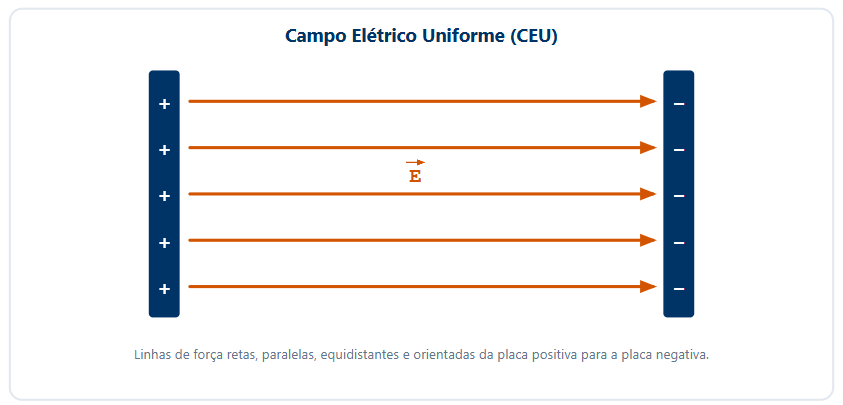

3º Ano | Aula 04: Linhas de Força e Campo Elétrico Uniforme
📚 Resumo
As Linhas de Força são linhas imaginárias tangentes ao vetor campo elétrico em cada ponto do espaço, indicando visualmente a direção e o sentido do campo. A densidade de linhas é proporcional à intensidade do campo.
Um Campo Elétrico Uniforme (CEU) ocorre quando o vetor campo elétrico $\vec{E}$ possui o mesmo módulo, direção e sentido em todos os pontos de uma região. Suas linhas de força são retas paralelas, igualmente espaçadas e orientadas da placa positiva para a placa negativa.
📖 Linhas de Força e Campo Elétrico Uniforme (CEU)
1. Propriedades das Linhas de Força
Nascem em cargas positivas (ou no infinito) e morrem em cargas negativas (ou no infinito).
O vetor campo elétrico $\vec{E}$ é tangente às linhas de força em qualquer ponto e possui o mesmo sentido delas.
Nunca se cruzam, pois em cada ponto do espaço o vetor campo elétrico resultante é único.
A intensidade do campo elétrico é maior nas regiões onde as linhas estão mais próximas (maior densidade espacial).
2. Campo Elétrico Uniforme (CEU)
É estabelecido tipicamente no espaço entre duas placas condutoras planas e paralelas, carregadas com cargas de módulos iguais e sinais opostos.
O vetor campo elétrico $\vec{E}$ é constante em módulo, direção e sentido.
As linhas de força são retas paralelas, equidistantes e orientadas da placa positiva para a placa negativa.

Figura 1: Linhas de força paralelas e equidistantes entre duas placas paralelas eletrizadas.
3. Movimento de Partículas Carregadas no CEU
Uma partícula de massa $m$ e carga $q$ lançada ou abandonada em um CEU experimenta uma força elétrica constante $\vec{F} = q \cdot \vec{E}$. Pela Segunda Lei de Newton ($\vec{F} = m \cdot \vec{a}$):
$$a = \frac{|q| \cdot E}{m}$$
Como a aceleração é constante, a partícula realiza um Movimento Uniformemente Variado (MUV) na direção do campo elétrico.
Se a partícula for lançada perpendicularmente ao campo, descreverá uma trajetória parabólica (análoga ao lançamento horizontal no campo gravitacional).
💡 Física em Ação
🛢️ Experimento da Gota de Óleo de Millikan
Robert Millikan utilizou um campo elétrico uniforme entre duas placas para equilibrar a força peso de pequenas gotas de óleo carregadas, determinando pela primeira vez a carga elementar do elétron ($e \approx 1,6 \times 10^{-19}\text{ C}$).
🖨️ Telas Touchscreen Capacitivas
O toque do dedo altera o campo elétrico uniforme criado entre as camadas transparentes condutoras da tela do celular, permitindo registrar a posição exata do toque.
✅ 5 Questões Resolvidas (R 1 a 5)
R 1: Propriedade das Linhas de Força
Enunciado: Duas linhas de força de um mesmo campo eletrostático podem se cruzar no espaço? Justifique.
Resolução: Não. Se duas linhas se cruzassem, haveria duas direções possíveis para o vetor campo elétrico no ponto de intersecção. Como o campo elétrico resultante em um ponto do espaço é único, as linhas de força nunca se cruzam.
R 2: Aceleração de um Próton no CEU
Enunciado: Um próton ($q = 1,6 \times 10^{-19}\text{ C}$, $m = 1,6 \times 10^{-27}\text{ kg}$) é abandonado no vácuo em um campo elétrico uniforme de intensidade $E = 2,0 \times 10^3\text{ N/C}$. Determine o módulo da aceleração adquirida pelo próton.
Resolução:
1. Calculando a força elétrica: $F = q \cdot E = (1,6 \times 10^{-19}) \cdot (2,0 \times 10^3) = 3,2 \times 10^{-16}\text{ N}$.
2. Pela Segunda Lei de Newton ($F = m \cdot a$):
$a = \frac{F}{m} = \frac{3,2 \times 10^{-16}}{1,6 \times 10^{-27}} = \mathbf{2,0 \times 10^{11}\text{ m/s}^2}$.
R 3: Equilíbrio de uma Partícula
Enunciado: Uma pequena esfera de massa $m = 2,0 \times 10^{-3}\text{ kg}$ e carga $q = +4,0\ \mu\text{C}$ permanece em equilíbrio suspenso no ar entre duas placas paralelas horizontais. Sabendo que $g = 10\text{ m/s}^2$, determine o módulo e o sentido do campo elétrico entre as placas.
Resolução:
Para o equilíbrio, a força elétrica deve anular a força peso ($\vec{F}_e = -\vec{P}$):
• $P = m \cdot g = (2,0 \times 10^{-3}) \cdot 10 = 2,0 \times 10^{-2}\text{ N}$ (para baixo).
• Portanto, a força elétrica deve valer $F_e = 2,0 \times 10^{-2}\text{ N}$ voltada para cima.
• Como a carga $q$ é positiva, o campo elétrico tem o mesmo sentido da força: para cima.
• Módulo do campo: $E = \frac{F_e}{q} = \frac{2,0 \times 10^{-2}}{4,0 \times 10^{-6}} = \mathbf{5,0 \times 10^3\text{ N/C}}$.
R 4: Deflexão de Elétrons em Lançamento Horizontal
Enunciado: Um elétron é lançado horizontalmente com velocidade $v_0$ em um CEU vertical orientado para baixo. Para qual placa o elétron será defletido?
Resolução:
O elétron possui carga elétrica negativa ($q < 0$). A força elétrica exercida sobre ele possui a mesma direção do campo elétrico, mas sentido oposto.
Como o campo aponta para baixo, a força elétrica atuará para cima, defletindo o elétron na direção da placa superior (positiva).
R 5: Densidade de Linhas e Intensidade do Campo
Enunciado: Em um diagrama de linhas de força de um campo não uniforme, observa-se que no ponto $A$ as linhas são mais adensadas que no ponto $B$. Em qual dos pontos o campo elétrico é mais intenso?
Resolução:
A densidade espacial das linhas de força é diretamente proporcional à intensidade do campo elétrico. Portanto, o campo elétrico no ponto $A$ é mais intenso que no ponto $B$ ($E_A > E_B$).
✍️ 5 Questões Propostas (P 6 a 10)
P 6: Orientação do Campo Elétrico Uniforme
Enunciado: Em um campo elétrico uniforme criado por duas placas paralelas verticais, a placa da esquerda está carregada positivamente e a da direita, negativamente. Qual é o sentido do vetor campo elétrico no interior das placas?
Resolução: As linhas de força saem das cargas positivas e vão para as negativas. Portanto, o sentido do campo elétrico é da esquerda para a direita (horizontalmente).
P 7: Velocidade de uma Carga Abandonada no CEU
Enunciado: Uma carga de $1\ \mu\text{C}$ e massa $10^{-6}\text{ kg}$ é solta do repouso em um CEU de $500\text{ N/C}$. Qual será sua velocidade após $2\text{ s}$? (Despreze a gravidade).
Enunciado: Uma carga de $-5\ \mu\text{C}$ é colocada em um CEU de $4 \times 10^3\text{ N/C}$ voltado para o Leste. Qual é o módulo e o sentido da força que atua sobre a carga?
Resolução:
$F = |q| \cdot E = (5 \times 10^{-6}) \cdot (4 \times 10^3) = \mathbf{0,02\text{ N}}$.
Como a carga é negativa, o sentido da força é oposto ao do campo: para o Oeste.
P 9: Trajetória no CEU com Lançamento Perpendicular
Enunciado: Qual é o formato da trajetória de uma partícula carregada lançada com velocidade constante perpendicularmente às linhas de força de um campo elétrico uniforme?
Resolução: A trajetória é parabólica. A velocidade horizontal permanece constante (Movimento Uniforme), enquanto o movimento vertical é acelerado pela força elétrica constante (Movimento Uniformemente Variado).
P 10: Características das Linhas em um CEU
Enunciado: Como são graficamente representadas as linhas de força de um Campo Elétrico Uniforme?
Resolução: São representadas por linhas retas paralelas, orientadas e igualmente espaçadas (equidistantes) entre si.
🎓 TESTES (T 11 a 15)
🚧 EM BREVE!
Questões de vestibulares serão disponibilizadas em breve.